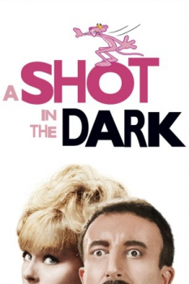
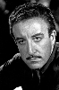

Country:United States, 102 minutes
Spoken languages:
Genres:Comedy, Crime, Mystery
Director(s):Blake Edwards
Writer(s):Blake Edwards, William Peter Blatty
Video Codec:Unknown
Number: 1782


Certification:PG
Storyline:
Inspector Jacques Clouseau investigates the murder of Mr. Benjamin Ballon's driver at a country estate.
Cast: 
Medium: Original DVD,
Loaned: No
Aspect ratio: Unknown